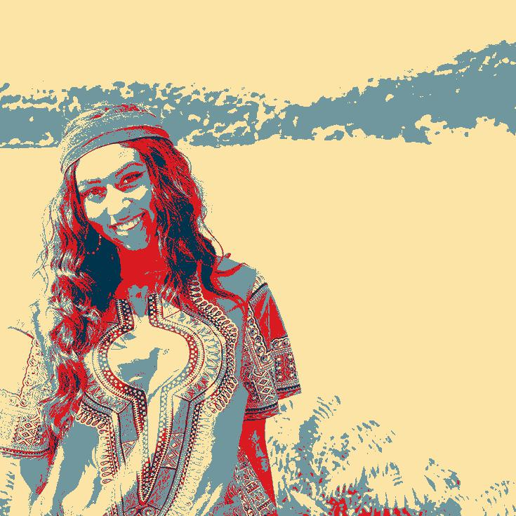

17 // NY
My name is Jordan Raimey. Some of my favorite things to do are listen to music, play volleyball, watch Netflix and do my makeup. My favorite rappers are Drake, Young Thug, Tyler the Creator, Travis Scott and Migos. My instagram name is whateverjordan_. I created that username when I was in 7th grade because I'm always right and people never want to hear the truth, therefore they tell me, "Whatever, Jordan." a lot.
LIKES: everything chocolate, music, makeup, and sleep
DISLIKES: liars, spaghetti, country music, homework
MY FAVORITE SONGS
1) I'm trying to make my website accesible to others by making content that is appropriate for all.
2) Other people used templates to create their site. They also were creative with their backgrounds. They did it through research and utilizing the resources given to us.
3) I'm most proud of learning how to insert codes in different websites.
1) VARIABLE - A variable is used to store values in your code. It defines a specific part of your code. Example:
t = Turtle()
pink = 5
red = 35
Turtle, red and pink are all variables in my code, which helps avoid confusion while creating the code.
2) LOOPS - Loops are used to repeat a selected part of code.
Example: To use a for loop --> "for _ in range():"
To use a while loop --> "while _ :"
3) CONDITIONALS - Conditionals are used for "if" and "else" statements
4) FUNCTIONS - Functions are reusable code.
1. A list is a group of elements on one line. It is useful for organization on your code.
2. All of my groups were helpful and welcoming. They produced a comfortable enviroment which made me feel comfortable to ask questions and answer questions.
The robotics portion of the program was definitely difficult. We worked in groups to wire a robot and build circuits. My team specifically had trouble trying to get our robot to function the way we wanted it to. Although we struggled, it was a riveting experience and I learned a lot.
Our robotics workshop was my favorite part of the week. We got to make our own personal gadget through Arduino. The gadget could light up and blink at the certain times you would set it for. Mine had very light blue LED's that had a darker blue LED that would blink through each LED. We also receive batteries to put in them so we can wear them on our shirts. For the workshop we got to work independently while being supervised by BlackRock tech employees. The employees would periodically check in on our work and help if needed.
We went to Gibson Dunn law firm and got to have conversations with numerous lawyers who work at the firm. Each lawyer shared a personal experience or presented a case that they worked on. The presentations were not only informational but some were even touching. It shows that legal represenation goes a long way and life will not always go smoothly. I learned that I am lucky to be living the life that I am living.